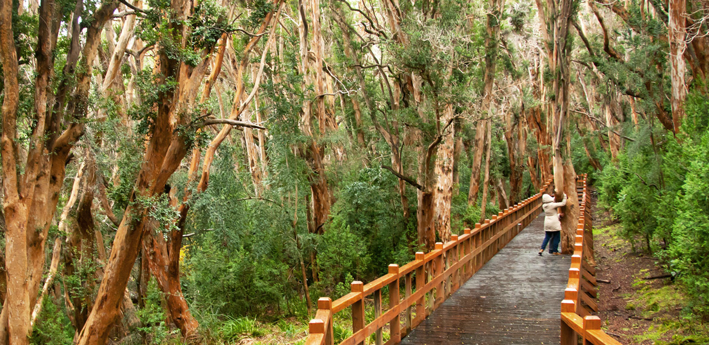
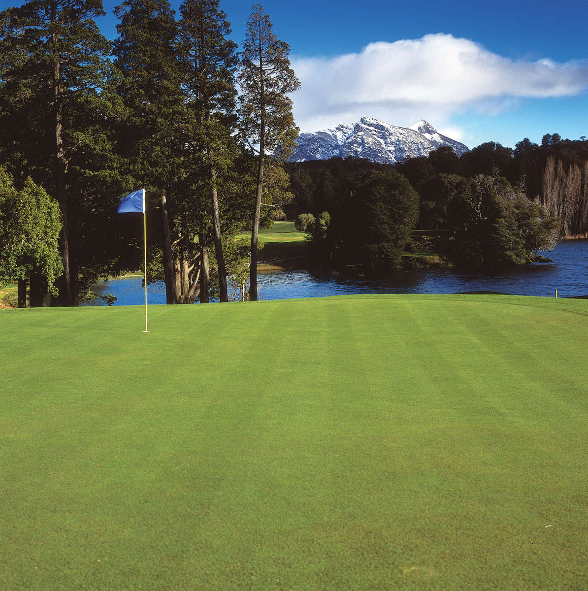
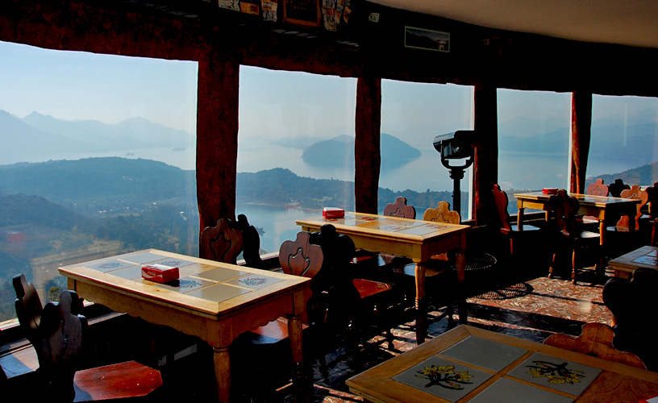
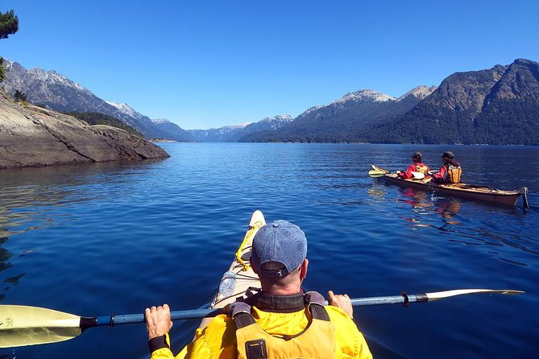
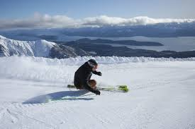
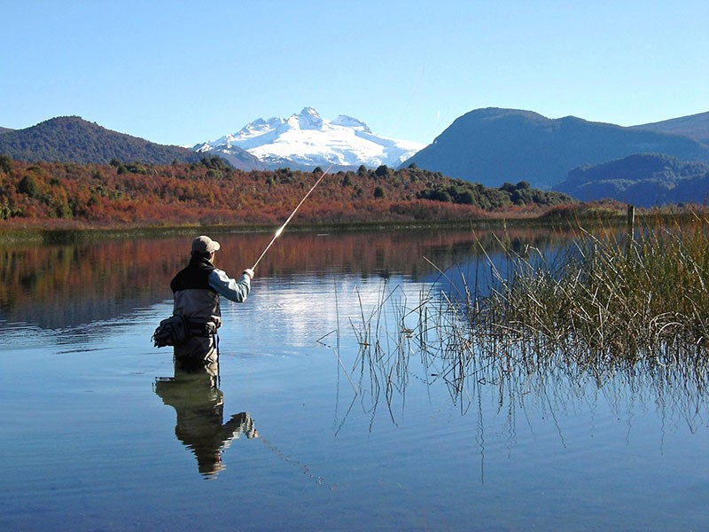

Posta
Bariloche
Península San Pedro
Bariloche · Patagonia
Bariloche · Patagonia
Posta Bariloche stands on the forested hillside of Península San Pedro, an exclusive peninsula inside Nahuel Huapi National Park. The house rises as a dark vertical form through native coihue — black corrugated steel against ancient trunks — with a glass front on two sides that frames unobstructed views of Cerro López and the lake below.
Eight-meter ceilings open the interior into the canopy. Heated concrete floors run the full ground floor. The kitchen is fully equipped; the leather sofa sits on a black sheepskin rug. Two king-sized bedrooms — one upstairs and one downstairs, en suite with its own private deck — sleep in total quiet, with only the wind in the trees and the occasional Austral parakeet. The upper bedroom has a dedicated workspace and a fourth-floor balcony where the lake appears through the treetops.
Posta Bariloche se encuentra en la ladera boscosa de la Península San Pedro, una península exclusiva dentro del Parque Nacional Nahuel Huapi. La casa se eleva como una forma vertical oscura a través del coihue nativo — acero corrugado negro contra troncos ancestrales — con frente de vidrio en dos lados que enmarca vistas despejadas al Cerro López y al lago.
Techos de ocho metros abren el interior hacia el dosel. Pisos de concreto radiante en toda la planta baja. Cocina equipada; sillón de cuero sobre alfombra de piel negra. Dos dormitorios king — uno arriba y uno abajo, en suite con deck privado propio — duermen en silencio total. El dormitorio superior tiene escritorio de trabajo y balcón en el cuarto piso con vistas al lago entre las copas.
Posta Bariloche liegt am bewaldeten Hang der Península San Pedro, einer exklusiven Halbinsel im Nationalpark Nahuel Huapi. Das Haus erhebt sich als dunkle Vertikalform durch den nativen Coihue-Wald — schwarzes Wellblech gegen uralte Stämme — mit einer Glasfront auf zwei Seiten und unverstellten Blicken auf den Cerro López und den See.
Acht Meter hohe Decken öffnen das Innere zum Blätterdach. Beheizter Betonboden im gesamten Erdgeschoss. Voll ausgestattete Küche; Ledersofa auf schwarzem Schaffell. Zwei King-Schlafzimmer — eines oben, eines unten mit eigenem Privat-Deck — schlafen in völliger Stille. Das obere Zimmer verfügt über einen dedizierten Arbeitsplatz und einen Balkon im vierten Stock mit Seeblick durch die Baumkronen.
Posta Bariloche est situé sur le flanc boisé de la Península San Pedro, une péninsule exclusive à l'intérieur du Parc National Nahuel Huapi. La maison s'élève comme une forme verticale sombre à travers le coihue natif — acier ondulé noir contre des troncs ancestraux — avec une façade vitrée sur deux côtés offrant des vues dégagées sur le Cerro López et le lac.
Des plafonds de huit mètres ouvrent l'intérieur sur la canopée. Planchers chauffants en béton sur tout le rez-de-chaussée. Cuisine entièrement équipée ; canapé en cuir sur tapis en peau noire. Deux chambres king — l'une à l'étage et l'autre au rez-de-chaussée en suite avec sa propre terrasse privée — dorment dans un silence total. La chambre supérieure dispose d'un espace de travail dédié et d'un balcon au quatrième étage avec vue sur le lac entre les cimes.

Every room faces the forest and the view. Glass on two sides. The mountain is always present.


Posta Bariloche stands inside one of the last intact native forests of the Andean-Patagonian range. Four species define this landscape — each with its own character, history, and name.

The name first appeared in writing in 1520, recorded by Antonio Pigafetta, the Italian scholar who sailed with Magellan on the first circumnavigation of the Earth. Near the Strait that now bears Magellan's name, the expedition encountered the indigenous Tehuelche people — known for their height and for the large guanaco-skin boots they wrapped around their feet against the cold.
Pigafetta called them patagones — from the Spanish pata, foot, and possibly from the fictional giant Pathagon who appeared in the popular romance Primaléon (1512). The word carried the full weight of European mythology: giants at the edge of the world, where the map ran out and the imagination took over.
Mapuche traditions hold a different understanding. For them it is simply Wallmapu — the surrounding territory — the earth that has always been there, long before it needed a name invented by those arriving by sea. The giants were never giants. They were people who knew the cold, who wore what the land gave them, and who had been here long enough to know that the mountains were not the edge of anything. They were the center.
The peninsula puts you minutes from some of the most extraordinary corners of the Patagonian lake district. Here is where to go.






Write us to check availability. We respond within 24 hours.
Send an Inquiry